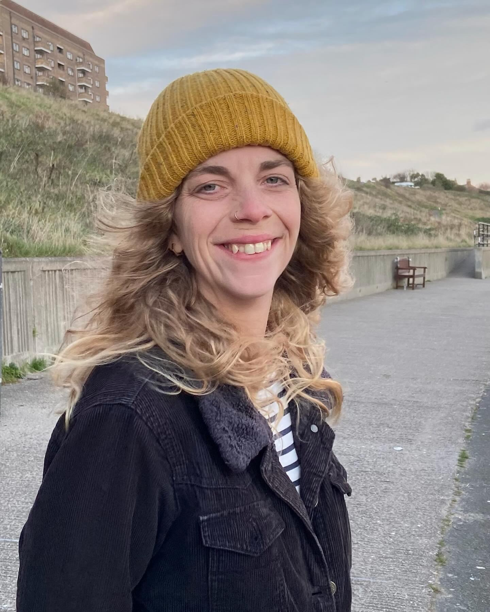
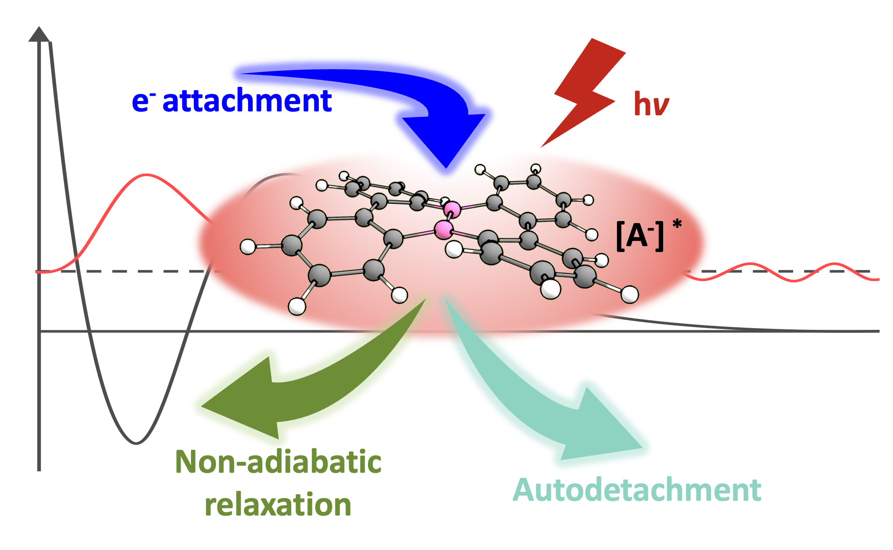
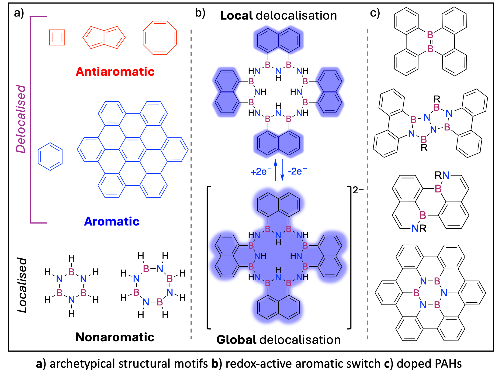
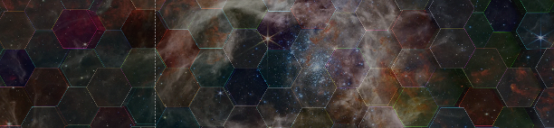
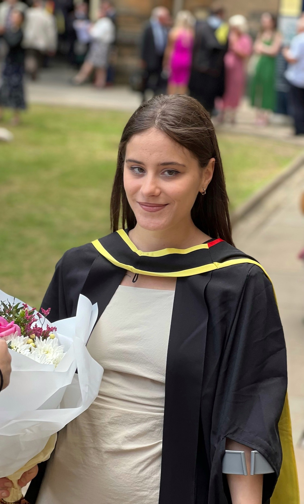
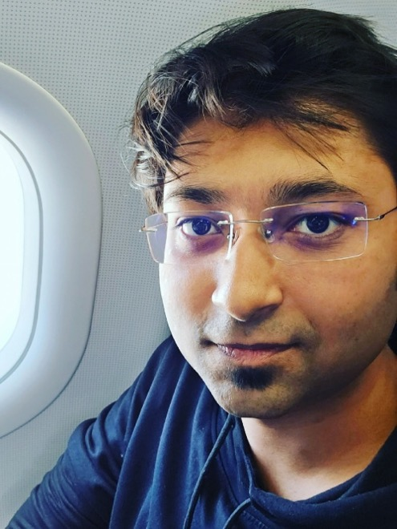

Cate S. Anstöter
Christina Miller Research Fellow
Cate is a theoretical and computational chemist with a PhD in experimental physical chemistry (Durham University, 2019).
She holds a Christina Miller Research Fellowship at the School of Chemistry, University of Edinburgh.
Her research combines ab initio electronic structure methods and semi-empirical models to calculate and rationalise the structure-property-charge relationship of organic molecules and understand photon and electron driven chemical physics.
Her expertise ranges from frequency-, time- and angle-photoelectron imaging of anions, to developing theoretical/computational protocols to interpret experimental signatures of molecular anions,
to modelling the aromaticity of charged heterocycles.
Her work combining theory and experiment has significantly advanced understanding of the excited (metastable) states of molecular anions. She developed and benchmarked protocols to extract structural information from the
photoelectron angular distributions of anions.
More recently, CSA’s research has expanded to developing ab initio methods to calculate and rationalise ring-currents of complex organic compounds.
Combining her knowledge of molecular anions with fundamental physical organic theory, she has developed protocols for calculating the aromatic signatures of redox-active aromatic switches.
About:
- 2022-2023: Senior PDRA, Dessent group (University of York)
- 2020-2021: Postdoctoral Fellow, Matsika group (Temple University)
- 2018: Invited Researcher Bochenkova group (Moscow State University)
- 2015-2019: PhD, Verlet group (Durham University)
- 2014-2015: MPhil, Popelier group (University of Manchester)
- 2010-2014: MChem, final year project with Patrick W. Fowler, FRS (University of Sheffield)
Awards and Fellowships:
- 2023: Christina Miller Research Fellowship (University of Edinburgh)
- 2020: Ken Wade Prize for Outstanding Thesis (Durham University)
- 2014: Peter Maitlis Research Prize (University of Sheffield)
Research
Development of methods and applications for photon- and electron-driven chemistry

Electron-driven processes are ubiquitous throughout the chemistry and biology. Electron attachment to a neutral species yields negativity charged systems, anions, that are generally destabilised.
These states are often metastable resonances (i.e. coupled to the neutral+free electron continuum) and are susceptible to autodetachment of electrons. Despite the drive to detach the extra electron and reform
the parent neutral + electron state, these metastable resonances are known to be important drivers of diverse reactions.
Understanding, and ultimately controlling, the interplay of autodetachment and electron-driven chemical reactions represents an open challenge to both the theory and experimental communities, and as such
the fascinating world of anions remains unchartered.
Our group is interested in modifiying existing electronic structure methods, and developing new non-Hermetian methods, that allow us to model the energetics and lifetimes of these elusive species.
Such methods have been recently demonstrated to model the lifetimes for the open-shell tetracene anion, in collaboration with the Garand group.
Modelling Aromaticity

Fundamental questions related to understanding and control of aromaticity have tormented theoreticians for decades,
with the magnetic criterion (ring current) widely accepted as the most rigorous, if not directly observable, diagnostic property.
It is understood that, when the delocalised electrons of an aromatic (4n+2 π) system are subjected to a magnetic field, a diatropic ring current is induced. Under the same influence,
an anti-aromatic system (defined by Hückel to be a system with 4n π electrons) exhibits a paratropic ring current. Thus, the calculation and visualisation of the induced current is a
direct theoretical assessment of aromaticity. Although many of ways of calculating magnetic response and delocalisation exist, the ipsocentric approach is unique in the fact that it gives
insight into the physical origin of the ring current. Specifically, the ipsocentric approach not only gives insight into global ring currents
but gives rise to a set of 'spectroscopic’ selection rules that govern the (anti)aromatic ring-current patterns.
We have recently collaborated with the Wagner group (Goethe Universität, Frankfurt) to developed protocol for
calculating the aromatic signatures of synthetically realised redox-active aromatic switches.
Understanding microsolvation effects
Project description, including further links to posters, talks, publications.

Group

Chiara Beldì
PhD student (2024-2027)
Bio: Chiara completed her master’s degree in Physics and Astronomy at the University of Glasgow. In her master’s project,
she studied the chemistry of hydrocarbons in interstellar space using a chemical kinetics simulation. Following this experience,
she developed an interest in computational astrochemistry and joined the group as a PhD student in 2024.
Her research centres on the computational modelling of astrochemically-relevant molecules and their interactions with electrons, with a particular focus on molecular anions.

Ashutosh Jadhav
MRes student (2024-2025)
Bio: Ashutosh received a Master's degree in Analytical Chemistry, complemented by a Postgraduate Diploma in Regulatory Affairs, from the University of Mumbai, India.
He is co-supervised by Prof. Anita Jones, and his research project is focussed on exploring an innovative fluorescent nucleobase analog, ABN.
This project aims to use computational chemistry to understand the excited states of ABN, specifically the fluorescence properties and solvent assisted excited state proton transfer.
Publications
A full list of publications can be found here
- Perturbing Pentalene: Aromaticity and Antiaromaticity in a Non‐alternant Polycyclic Aromatic Hydrocarbon and BN‐heteroanalogues
Cate S. Anstöter* & Patrick W. Fowler
2025
ChemPhysChem, Available online
- A Base-Free Two-Coordinate Oxoborane
Clement R. P. Millet, Dominic R. Willcox, Gary S. Nichol, Cate S. Anstöter & Michael J. Ingleson
2024
Angewandte Chemie, 65, e202419094
- Electronic and vibrational spectroscopy of benzonitrile cation for astrochemical consideration
Francis C. Daly, Thomas E. Douglas-Walker, Julianna Palotás, Cate S. Anstöter, Angel Zheng, Ewen K. Campbell
2024
J. Chem. Phys., 161, 074305
- Tetramerization of BEB-Doped Phenalenyls to Obtain (BE)8-[16]Annulenes (E = N, O)
Alexander S. Scholz, Michael Bolte, Alexander Virovets, Eugenia Peresypkina, Hans-Wolfram Lerner, Cate S. Anstöter* & Matthias Wagner
2024
JACS, 146, 12100
- Tuning (Anti) Aromaticity: Variations on the [8]‐Circulene Framework
Patrick W. Fowler & Cate S. Anstöter*
2024
ChemPhysChem, 25, e202300791
- Autoionization from the Plasmon Resonance in Isolated 1-Cyanonaphthalene
James N. Bull, Paola Bolognesi, Cate S. Anstöter, Eleanor K. Ashworth, José E. Navarro Navarrete, Boxing Zhu, Robert Richter, Nitish Pal, Jacopo Chiarinelli, Lorenzo Avaldi, Henning Zettergren & Mark H. Stockett
2023
J. Chem. Phys., 158, 241101
- Photodissociative Decay Pathways of the Flavin Mononucleotide Anion and its Complexes with Tryptophan and Glutamic Acid
Kelechi O. Uleanya, Cate S. Anstöter & Caroline E. H. Dessent
2023
PCCP, 25, 30697
- Laser Interfaced Mass Spectrometry of the Sunscreen Molecule Octocrylene Demonstrates that Protonation Does not Impact Photostability
Cate S. Anstöter, Natalie G. K. Wong, Kgato P. Selwe & Caroline E. H. Dessent
2023
ChemPhotoChem, 7, e202300133
- Alkylated Green Fluorescent Protein Chromophores: Dynamics in the Gas Phase and in Aqueous Solution
Eleanor K. Ashworth, Min-Hsien Kao, Cate S. Anstöter, Gerard Riesco-Llach, Lluís Blancafort, Kyril M. Solntsev, Stephen R. Meech, Jan R. R. Verlet & James N. Bull
2023
PCCP, 25, 23626